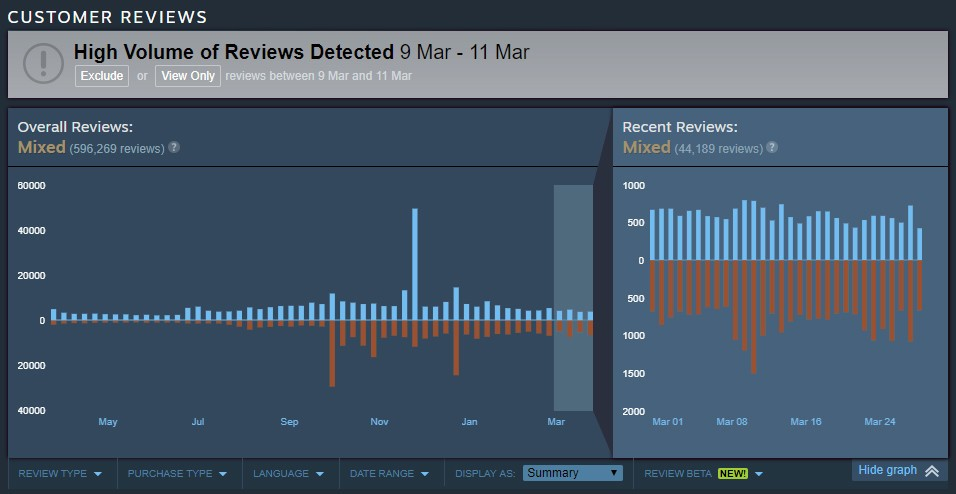
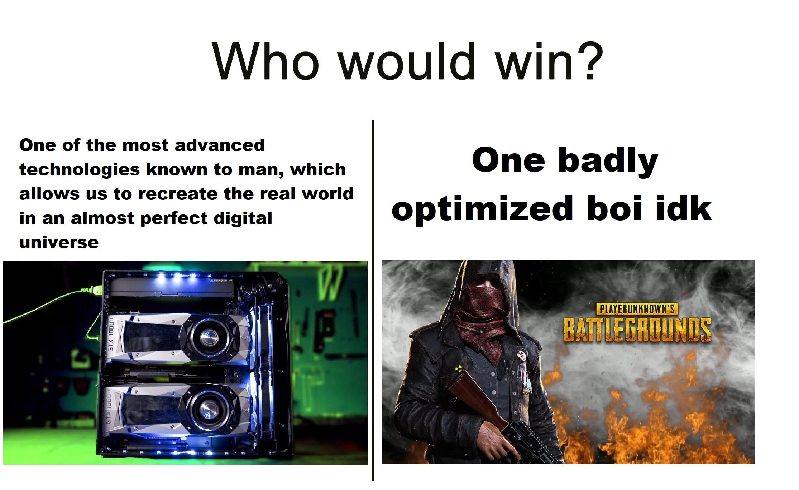
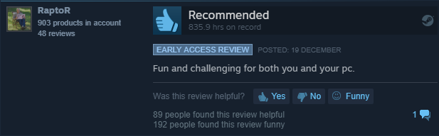

Overall reviews
På bildet over vises det en overall review av spillet etter nesten 600 000 folk har sagt det de mener. Bildet viser en overall review på mixed, men per dags dato så er overall reviewen av spillet "mostly negative". Det er etter over 700 000 reviews.

Årsak
PlayerUnknown's Battleground er et spill som er både hatet og elsket av mange og vil forsett å være det. Over ser man et bilde av en person som har skrevet en liten review av spillet og gitt tommel opp. Personen har klokket inn over 835.9 timer på spillet og skriver simpelt at spillet er "morsomt og krevende for både deg og pcen din"
Det er flere grunner til at mennesker både elsker og hater spillet. Som personen i bildet over sier så er spillet krevende å kjøre. Uansett om man har en potet av en pc eller god pc. Spillet er generelt dårlig optimalisert og kjører ikke uten noen form for problem, men det er heldigvis ikke like ille som det tidligere stadiet av spillet. optimalisering har vært et stort problem for Pubg og er en av grunnene til at at spillet har fått så negative reviews.
De jobber for å fikse problemet med optimalisering, men det føles ikke alltid slik ut. Hvis man launcher spillet vil man se på hovedsiden at det er en box i høyre hjørnet som sier "Fix Pubg" som man kan klikke på. Den er der av en grunn for i det siste så har det ikke følt ut som om de har prøvd å fikse spillet i det hele tatt. Akkurat som andre store spillselskap så er det en ting som er i hodet deres, penger. Et godt eksempel på et slikt selskap er EA. Utviklerne av Pubg har hatt mer fokus på å pumpe ut "cases" som inneholder skins til karakteren din og våpnene dine, og sesongpass. Sesongpassene koster selvfølgelig penger, og for å åpne noen cases så må man kjøpe nøkler. Det er ikke nødvendigvis en dårlig ting, men når de prioriterer det overfor å fikse spillet så vil folk klage. Så de negative reviewsa hjelper til å få Utviklerne av Pubg til å fokusere på de viktigere tingene.
Det er ikke bare negative ting med spillet selvom reviewsa nesten tilsier det. Før Utviklerne avsporet så hadde spillet overall positivt reviews, selv med dårlig optimalisering. Grunnen til det er fordi folk generelt trives med å spille spillet. Det er både et krevende og morsomt spill, der man trenger skill, strategi og litt luck for å komme ut på toppen. Så øvelse gjør mester. Det blir også holdt competetive turneringer hvor streamere og pro lag kan slåss mot hverandre for store prispotter.
Utviklerne trenger å optimalisere spillet og ikke fokusere fult ut på pengestrømmen, de må høre mer på spillerene så vil reviewsene blir positive igjen ganske fort.